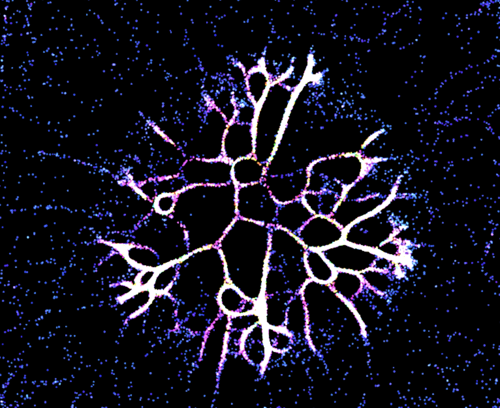

About Me
I grew up in a small rural town with a mother who has schizophrenia — and that,
more than any course I’ve taken, shaped how I think about building technology.
When someone you love experiences information and reality differently from everyone around them,
you develop a deep intuition for how people process the world in fundamentally different ways.
That’s not separate from cognitive science — that is cognitive science, lived.
It’s why I study it. It’s why I obsess over clarity. And it’s why every system
I build asks: does this actually meet people where they are?
Axiom Engine has three AI teaching personas because I know firsthand that the “standard”
explanation fails most people. My background in systems, machine learning, and cognitive science
isn’t three separate things — it’s one thesis.
"Growing up close to someone who experiences the world differently taught me that clarity isn’t one-size-fits-all. Now I build technology that meets people where they are."
Projects
scroll to explore
Axiom Engine
Python · Flask · Gemini 2.5 Pro · FAISS · LangChain
Turns natural language into interactive algorithm visualizations. 10,000+ lines of production code with a self-healing AI render pipeline that auto-recovers ~95% of broken LLM output.
- 4-tier self-healing render pipeline — auto-recovers ~95% of broken LLM output
- Two-tier semantic caching (SHA-256 exact + 768-dim cosine similarity)
- RAG pipeline with FAISS vector search and 41 intent triggers
- 219 pytest tests, GitHub Actions CI/CD, Docker, 1K concurrent users

Physarium Polycephalum Simulation
JavaScript · WebGL · Canvas API
Real-time biological simulation of slime mold behavior with thousands of autonomous agents rendered at 60fps via WebGL.
- Optimized per-frame updates with typed arrays for thousands of dynamic agents
- Integrated WebGL plugins for real-time parameter adjustments
ML Sentence Autocomplete
Python · NLTK · spaCy · Flask · GPT-2
ML-powered autocomplete engine with a Flask backend and GPT-2 integration that boosted model performance by 50%.
- Flask backend with GPT-2 integration and custom NLP pipeline
- 50% performance improvement with real-time processing
Vestibular Rehabilitation Device
AutoCAD · Manufacturing · User Research
Handheld rehabilitation device designed with Shirley Ryan AbilityLab clinicians for patients with vestibular disorders.
- Interchangeable inserts and adjustable weights for progressive tolerance-building
- Designed through iterative user research with clinical practitioners
Experience
IT Operations Intern
Kemper Corporation
- Prototyped AI-powered workflow agents using OpenAI APIs to automate PM workflows — status reports, RAID logs, risk analysis — increasing PM productivity by 30%
- Engineered data visualizations for monthly CIO reports, delivering actionable KPI insights for leadership
- Led full redesign of the PM Handbook; presented deliverables to CIO, IT VPs, and 50+ senior PMs
- Initiated a 3-week mentorship with 3 senior PMs, gaining hands-on experience in secure systems architecture
IT Support Aide
Northwestern McCormick School of Engineering IT
- Provided technical support, provisioned devices onto Northwestern's secure network, and managed 8 computer labs
- Sole aide granted access to create and track service tickets in the IT ticketing system, accelerating resolution timelines
Skills
Languages
AI & Machine Learning
Backend & Infrastructure
Frontend & Design
Education
Northwestern University
McCormick School of Engineering
B.S. Computer Science (Systems Concentration)
Minors: Cognitive Science, ML & Data Science
Honors: Ryan Scholar, Knight Scholar
Coursework: Machine Learning, Databases, Networking, Intro to AI, Programming Languages, Computer Systems, Data Structures & Algorithms, Linear Algebra, Engineering Analysis
Get in Touch
I’m always interested in ambitious teams building things that matter. Drop a line.